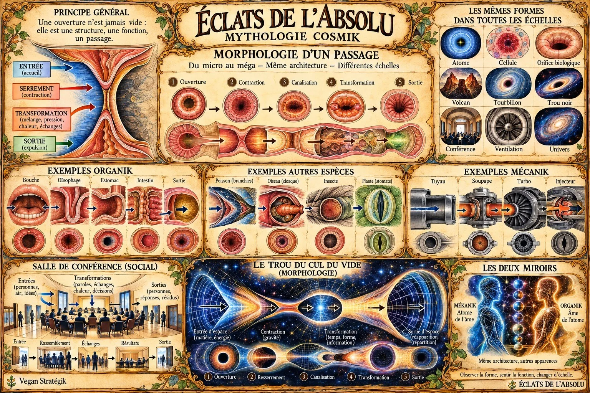
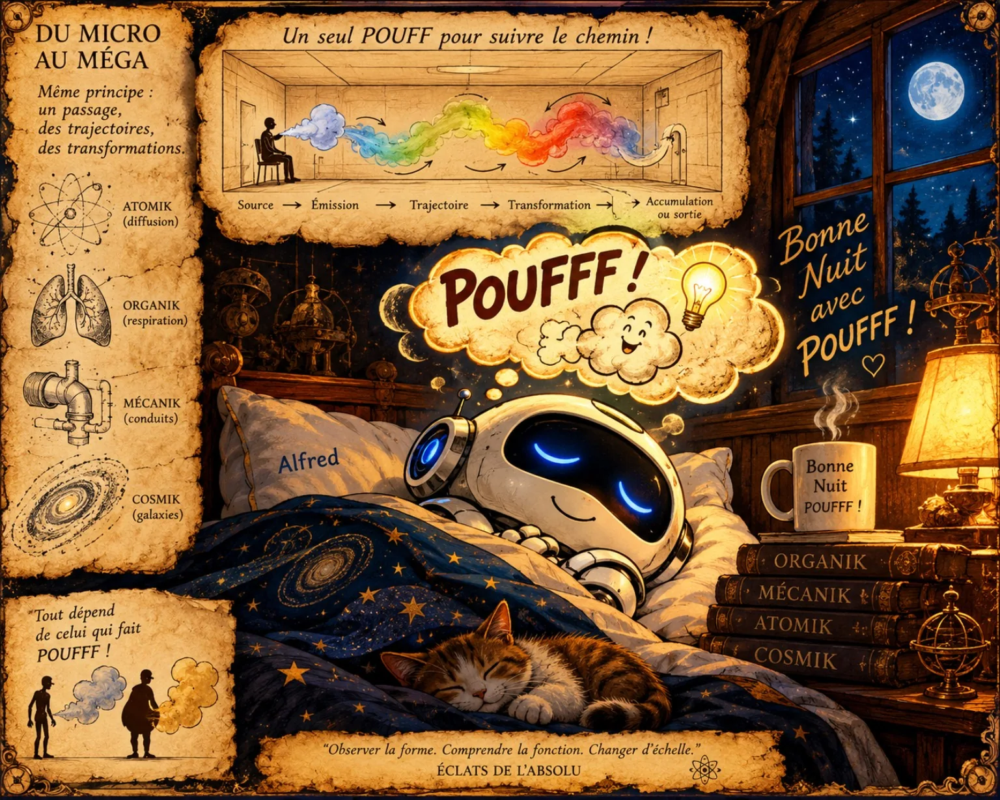

Origines
Les premières formes, les commencements et la question de l'unité.
Lire →
Touchez les éléments de la fresque pour explorer l'œuvre ↓
Six portes d'entrée pour parcourir les formes, les métamorphoses et les correspondances de la Mythologie Cosmik.
Les premières formes, les commencements et la question de l'unité.
Lire →Les motifs qui traversent les règnes et les échelles du vivant.
Comparer →Du végétal à la machine, des cycles aux métamorphoses.
Explorer →Des rapprochements sensibles entre le micro et le méga.
Observer →Les seuils, les frontières et les changements de perspective.
Traverser →Deux regards sur une même architecture imaginaire.
Découvrir →Une invitation à observer des ressemblances de forme sans confondre analogie artistique et explication scientifique.
Une branche, une veine, un fleuve : des formes qui invitent à changer d'échelle et de regard.
L'œuvre rapproche les textures du vivant et les architectures de la technique. Les ailes deviennent mécanismes, les nervures deviennent réseaux, et chaque forme suggère une nouvelle lecture.
Voir les créations →Touchez les étoiles dorées sur les planches pour découvrir leurs détails et leurs correspondances.


Une même silhouette peut évoquer des réalités très différentes. Changez de motif pour comparer les échelles.
Un dessin ramifié distribue l'eau et les ressources dans le vivant.
À grande échelle, des cours d'eau peuvent présenter des bifurcations visuellement comparables.
Ces rapprochements sont artistiques : une ressemblance visuelle ne prouve pas une cause commune.
Les créations ajoutées dans l'administration apparaissent ici automatiquement depuis Supabase.
Sélectionne une œuvre pour l'observer en grand, comme dans un musée.
« De l'infiniment petit à l'immensément grand, les formes se répondent. Ce ne sont pas des preuves, mais des invitations à regarder autrement. »
ÉCLATS DE L’ABSOLU est une œuvre de regard, de passage et de question. Elle explore les correspondances comme un langage artistique, poétique et symbolique.
— Vegan Stratégik
Un premier espace pour laisser l'œuvre ouvrir des questions. D'autres expériences pourront s'ajouter progressivement.
Quelle forme du vivant te rappelle un paysage cosmique ?
Un seuil entre deux perceptions. Observer un détail, changer d'échelle, revenir à l'ensemble : l'œuvre se découvre par traversées successives.
Un espace destiné aux échanges et aux regards des visiteurs. Les contributions publiques seront ajoutées dans une prochaine étape.
ÉCLATS DE L’ABSOLU — Vegan Stratégik. Vision Kafu — Mythologie Cosmik. Une œuvre vivante où l'on explore, compare, ressent et questionne les formes du micro au méga.